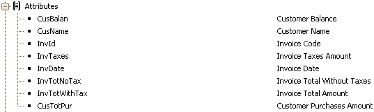
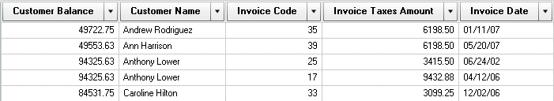
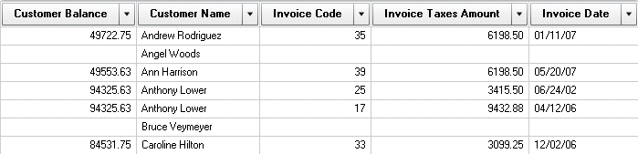

This property sets whether the attributes values returned will be all the attribute values from the database or just the values from the joined tables. ValuesFalse: The records from the associated table are shown (default value). Default: False DescriptionWhen creating queries using attributes with at least two tables, the values returned correspond to joined tables; this behavior is set using the ShowAllValues property. For example, the following query collects information from Customers and related Invoices.  The default result is the following:  If you want All values from the Customer Name attribute, you will need to change the ShowAllValues property to true in the query element definition. The new result is:  Notice how in this case all the Customers are shown, those with and those without Invoices. Notes:
ScopeObjects: Query
|
| Backlinks |
| Category:Query object |